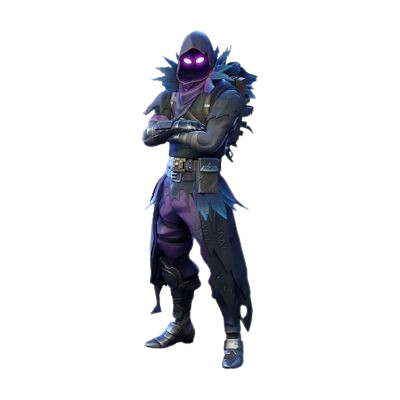

FORTNITE
The story of Fortnite did not begin with the massive Battle Royale phenomenon that the world knows today. Epic Games first announced the title way back in 2011 at the Spike Video Game Awards. Originally pitched as a cooperative survival game that combined the resource gathering and building mechanics of Minecraft with the zombie survival aspects of Left 4 Dead, the game underwent a notoriously long and troubled development cycle. Epic shifted the game's engine multiple times, eventually landing on Unreal Engine 4, and experimented heavily with its art style before settling on its iconic, vibrant, cartoonish aesthetic. It wasn't until July 2017 that this original concept was finally released as a paid early-access title called Fortnite: Save the World. While it garnered a dedicated player base, it did not immediately shake the gaming industry.
Everything changed later in 2017. Watching the meteoric rise of PlayerUnknown's Battlegrounds (PUBG), which popularized the "Battle Royale" genre, Epic Games saw a massive opportunity. Utilizing the existing assets, shooting mechanics, and the unique building system from Save the World, a small team at Epic developed a Battle Royale mode in roughly two months. In September 2017, they released Fortnite Battle Royale as a standalone, free-to-play game. Because it bypassed the upfront cost of its competitors and was readily available on major consoles as well as PC, it removed all barriers to entry. The unique ability to instantly build structures to defend oneself added an unprecedented skill gap to the shooter genre, making it incredibly addictive.
By early 2018, Fortnite had exploded into a mainstream cultural juggernaut. It became a household name, transcending the gaming community. Content creators like Tyler "Ninja" Blevins brought millions of eyes to the game, culminating in a record-breaking Twitch stream featuring celebrities like Drake and Travis Scott. To monetize their massive free-to-play audience, Epic Games popularized the "Battle Pass" system. Instead of selling "loot boxes" with randomized rewards, the Battle Pass allowed players to pay a flat fee and earn cosmetic rewards by playing the game and leveling up. This system was so successful that it completely revolutionized how the entire video game industry approached live-service monetization.
As the years progressed, Fortnite continuously redefined live-service gaming through its innovative "Chapters" and "Seasons." Epic Games began telling a continuous, mysterious storyline through massive, real-time live events that players experienced together in-game. From a giant meteor crashing into the map and a spectacular mecha vs. monster fight, to the infamous "Black Hole" event in 2019 that literally took the game offline for days to usher in Chapter 2, Fortnite kept its community constantly guessing. It also evolved into a virtual metaverse, hosting live interactive concerts for artists like Ariana Grande and Eminem, and partnering with massive intellectual properties like Marvel, Star Wars, and Dragon Ball to bring iconic characters into the game.
Today, Fortnite has evolved far beyond a simple Battle Royale game into a massive digital ecosystem. With the release of Unreal Editor for Fortnite (UEFN) and the launch of Chapter 5, Epic Games transformed the client into a platform for entirely different games. It is no longer just a shooter, but a hub where players can access survival crafting games, rhythm games, arcade racers, and millions of player-created experiences, securing its legacy as one of the most important and influential video games of the 21st century.
Fortnite Battle Royale is a game of survival, strategy, and skill. The premise is simple: up to 100 players drop onto a massive island, scavenge for weapons and resources, and fight to be the last person (or team) standing as a toxic storm continuously shrinks the playable area. Here is a fully detailed breakdown of every mechanic you need to understand to secure a Victory Royale.
Every match begins in the pre-game lobby, a waiting area where you can practice your mechanics while the server fills up. Once the match officially starts, all 100 players are loaded into the "Battle Bus," a flying blue school bus held up by a hot air balloon that travels in a straight, randomized line across the island.
Your first major decision is choosing where to land. The map is filled with "Points of Interest" (POIs)—named locations that generally contain the highest concentration of loot, but also attract the most enemy players. If you are a beginner, it is highly recommended to land at unnamed landmarks or smaller houses on the outskirts of the map to avoid early-game chaos. When you jump out of the bus, you will skydive toward your target. Pushing your character straight down will make you fall faster. Your glider will automatically deploy when you reach a certain distance from the ground, but you can deploy it earlier to travel further distances across the map. The goal is to aim for the roof of a building, use your harvesting tool (pickaxe) to break through the roof, and secure a chest hidden in the attic before anyone else does.
You only have five inventory slots to hold your gear, meaning inventory management is a crucial skill. You must balance your offensive weapons, defensive healing items, and utility/mobility items.
Weapons and items in Fortnite follow a strict color-coded rarity system, which determines their damage output and reload speed. The tiers are:
A standard inventory loadout usually consists of an Assault Rifle (for medium to long-range combat), a Shotgun (the most important weapon in the game for close-quarters fights), an SMG or Sniper Rifle depending on your playstyle, and two slots dedicated entirely to healing items.
Your character has a base health pool of 100 HP, represented by a green bar at the bottom of your screen. On top of that, you can drink shield potions to gain up to 100 Shield, represented by a blue bar. Damage taken from weapons will first deplete your shield before affecting your actual health. Fall damage and storm damage, however, bypass your shield and directly attack your health.
You must actively look for and consume healing items:
Staying still in Fortnite is a death sentence. The game features a robust movement system that you must master. You have a stamina bar that dictates how long you can perform advanced movements.
Sprinting and Sliding: By pressing your sprint bind, your character will put their weapons down and run significantly faster. If you crouch while sprinting, you will initiate a tactical slide. Sliding is incredibly useful for navigating down hills quickly without taking fall damage, or for sliding into a room to make yourself a smaller target during a gunfight.
Mantling: If you jump toward a ledge, wall, or roof that is just out of reach, you can hold the jump button to grab the edge and hoist yourself up. This is essential for navigating the complex architecture of POIs.
Vehicles: The map is littered with drivable sports cars, SUVs, and dirt bikes. These require fuel (found at gas stations) and can be modified with off-road tires or cow catchers. Vehicles are loud and draw attention, but they are the best way to escape a deadly storm.
Shooting in Fortnite requires an understanding of two main concepts: Bloom and Hitscan vs. Projectile.
Bloom: When you fire an Assault Rifle or SMG rapidly, you will notice the crosshair widens. Your bullets will randomly land anywhere inside that expanded crosshair. To counter bloom, you must "tap fire" (shoot in short bursts), crouch, and stand still to ensure your crosshairs remain tight and your shots are accurate.
Hitscan vs. Projectile: Historically, most ARs and Shotguns in Fortnite were "Hitscan," meaning the moment you clicked the trigger, the bullet instantly hit whatever the crosshair was touching. However, newer chapters have shifted heavily toward "Projectile" weapons. This means bullets have travel time and bullet drop. If an enemy is running in the distance, you must "lead" your shot by aiming slightly ahead of them, and aim slightly above them to account for the bullet falling over long distances.
The Right-Hand Peek: Because the camera sits over your character's right shoulder, you always have a massive advantage when peeking around the right side of cover. You can see your enemy and shoot them while exposing very little of your own body. Never peek from the left side if you can avoid it.
If you are playing standard Battle Royale, building is what separates the beginners from the professionals. Your pickaxe is used to harvest materials from the environment: Wood (fastest to build, lowest health), Brick (medium build time, medium health), and Metal (slowest to build, highest maximum health).
You can instantly place four different structures: Walls, Floors, Ramps (Stairs), and Cones (Pyramids).
When you are shot at, your very first instinct should never be to shoot back. Your first instinct must be to build a wall and a ramp to protect yourself and gain the high ground. The fundamental defensive maneuver is "Boxing Up"—building four walls around yourself, a floor below you, and a cone on top. This creates a safe 1x1 space where you can safely drink shield potions.
As you progress, you will learn "Editing." You can select the tiles of a wall you just placed to carve a window or a door into it, shoot your opponent through the new opening, and instantly reset the wall before they can shoot back. Advanced combat relies heavily on "Piece Control"—the act of placing your own walls and cones around an enemy before they can place their own, trapping them in a box that you own and control.
The Storm is a massive, purple, toxic dome that slowly closes in on a randomly selected safe zone (the white circle on your map). The match is divided into phases. In Phase 1, the storm moves slowly and only deals 1 damage per second to your health. By the final phases, the storm moves incredibly fast and deals a devastating 10 damage per second, killing you almost instantly.
"Rotating" is the term used for safely navigating from your current position into the next safe zone. A key strategy is to rotate to the "Dead Side" of the zone—the side of the white circle that is closest to the edge of the map. Because fewer players are coming from the edge of the map, the Dead Side is generally much safer and quieter, allowing you to survive longer without being forced into chaotic multi-team fights.
When there are only 5 to 10 players left, the match enters the "Endgame." The safe zone is now incredibly small, and tensions are high. At this stage, positioning is everything.
You should prioritize claiming the "High Ground"—the tallest natural hill or the tallest player-built structure in the circle. Having the high ground means you can look down on all other players, making it easy to shoot them in the head while they struggle to look up and shoot you. Avoid taking unnecessary shots; instead, let the other remaining players fight and weaken each other. Once the second-to-last player is eliminated, use your movement items and structural advantage to apply pressure to the final survivor and secure your Victory Royale.
While Battle Royale is the flagship experience, Fortnite has evolved into a massive hub with a variety of different games and server types. Similar to how Minecraft features survival realms, creative servers, and minigames, Fortnite offers several distinct, highly popular ways to play without ever leaving the application.